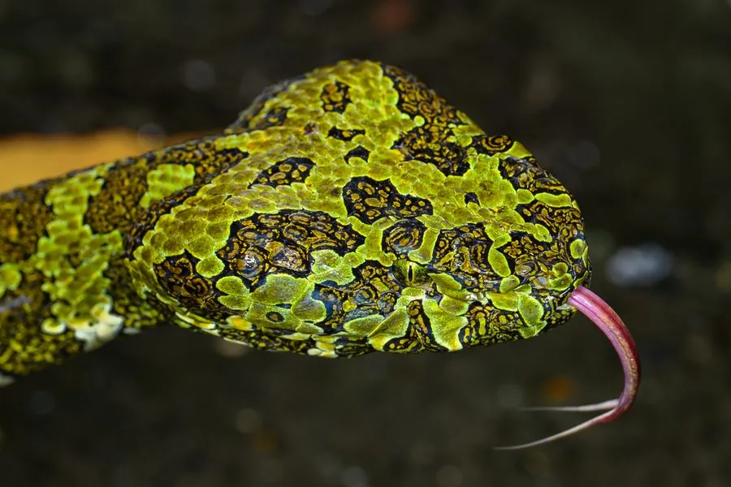

爬行动物 · 动物界
莽山原矛头蝮 Protobothrops mangshanensis

中国特有的珍稀毒蛇，仅分布于湖南莽山一带，体型粗壮、花纹似烙铁，野外种群数量极少，是国家一级保护动物。
- 分类
- 门脊索动物门纲爬行纲目有鳞目科蝰科属原矛头蝮属
- 栖息环境
- 湖南莽山及广东北部山区的常绿阔叶林与溪谷
- 地理分布
- 中国湖南莽山、广东北部等南岭山区的狭小区域
- 保护级别
- IUCN 濒危（EN）；中国国家一级保护动物；CITES 附录 II
物种志
莽山原矛头蝮体长 1.5–2 米，个别可超过 2 米，身体粗壮，头部呈三角形，吻端钝圆，体色以黄绿、灰绿为底，背部和两侧有大块不规则的深褐或黑色斑纹，斑纹形状略似烙铁，“莽山烙铁头”之名由此而来；尾部末端颜色较浅。
它是中国特有种，仅分布于湖南莽山和广东北部少数山区，栖息于海拔较高的常绿阔叶林和溪谷，夜间活动，捕食鼠类、鸟类、蛙类和蜥蜴。每年 6–8 月繁殖，雌蛇产卵约 20–30 枚，孵化期约 2 个月。莽山原矛头蝮数量稀少、分布狭窄，被列为濒危物种和国家一级保护动物，同时被列入国际公约附录 II；它毒性较强，被咬须立即就医，野外遇见应保持距离。
形态与习性
- 食性鼠类、鸟类、蛙类和蜥蜴
- 体长1.5–2 m
- 体重可达 2–4 kg
- 寿命野外寿命约 10–15 年
- 繁殖卵生，每窝约 20–30 枚，孵化约 2 个月
- 活动节律夜行性
- 保护国家一级保护动物，CITES 附录 II
趣味知识
- 莽山原矛头蝮是中国特有种，野外仅分布在湖南莽山和广东北部的狭小山区。
- 它的斑纹形状略似烙铁，因此民间称它“莽山烙铁头”。
- 该物种数量稀少，被列为国家一级保护动物，非法捕捉会触犯法律。